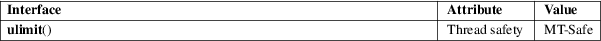

ulimit − get and set user limits
Standard C library (libc, −lc)
#include <ulimit.h>
[[deprecated]] long ulimit(int cmd, long newlimit);
Warning: this routine is obsolete. Use getrlimit(2), setrlimit(2), and sysconf(3) instead. For the shell command ulimit, see bash(1).
The
ulimit() call will get or set some limit for the
calling process. The cmd argument can have one of the
following values.
UL_GETFSIZE
Return the limit on the size of a file, in units of 512 bytes.
UL_SETFSIZE
Set the limit on the size of a file.
|
3 |
(Not implemented for Linux.) Return the maximum possible address of the data segment. | ||
|
4 |
(Implemented but no symbolic constant provided.) Return the maximum number of files that the calling process can open. |
On success, ulimit() returns a nonnegative value. On error, −1 is returned, and errno is set to indicate the error.
|
EPERM |
An unprivileged process tried to increase a limit. |
For an explanation of the terms used in this section, see attributes(7).

POSIX.1-2008.
SVr4, POSIX.1-2001. POSIX.1-2008 marks it as obsolete.
bash(1), getrlimit(2), setrlimit(2), sysconf(3)